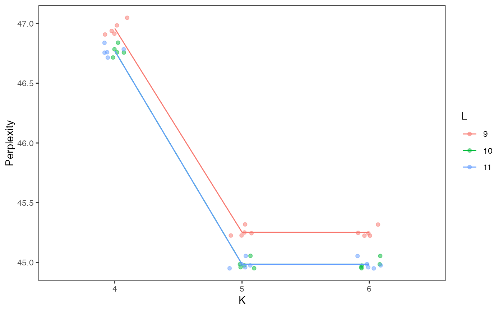
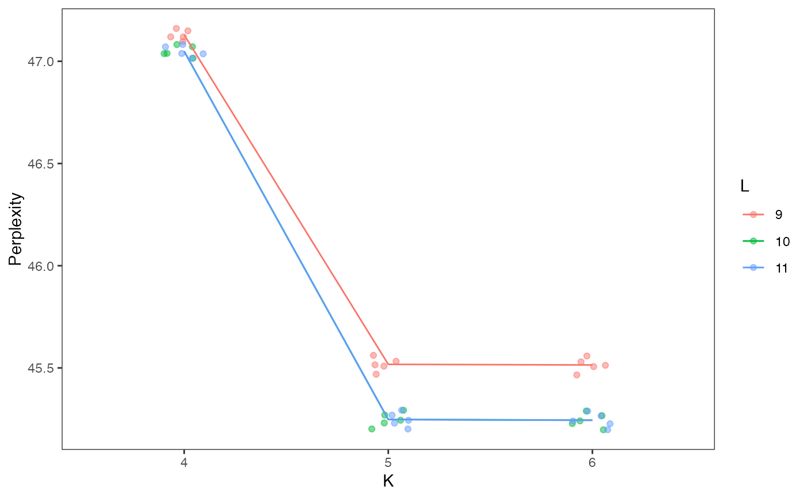

R/perplexity.R
resamplePerplexity.RdCalculates the perplexity of each model's cluster assignments given the provided countMatrix, as well as resamplings of that count matrix, providing a distribution of perplexities and a better sense of the quality of a given K/L choice.
resamplePerplexity(
x,
celdaList,
useAssay = "counts",
altExpName = "featureSubset",
doResampling = FALSE,
numResample = 5,
seed = 12345
)
# S4 method for SingleCellExperiment
resamplePerplexity(
x,
useAssay = "counts",
altExpName = "featureSubset",
doResampling = FALSE,
numResample = 5,
seed = 12345
)
# S4 method for ANY
resamplePerplexity(
x,
celdaList,
doResampling = FALSE,
numResample = 5,
seed = 12345
)A numeric matrix of counts or a
SingleCellExperiment returned from celdaGridSearch
with the matrix located in the assay slot under useAssay.
Rows represent features and columns represent cells. Must contain
"celda_grid_search" slot in metadata(x) if x is a
SingleCellExperiment object.
Object of class 'celdaList'. Used only if x is a
matrix object.
A string specifying which assay
slot to use if x is a
SingleCellExperiment object. Default "counts".
The name for the altExp slot to use. Default "featureSubset".
Boolean. If TRUE, then each cell in the counts
matrix will be resampled according to a multinomial distribution to introduce
noise before calculating perplexity. Default FALSE.
Integer. The number of times to resample the counts matrix
for evaluating perplexity if doResampling is set to TRUE.
Default 5.
Integer. Passed to with_seed. For reproducibility,
a default value of 12345 is used. If NULL, no calls to
with_seed are made.
A SingleCellExperiment object or
celdaList object with a perplexity
property, detailing the perplexity of all K/L combinations that appeared in the celdaList's models.
data(sceCeldaCGGridSearch)
sce <- resamplePerplexity(sceCeldaCGGridSearch)
plotGridSearchPerplexity(sce)

data(celdaCGSim, celdaCGGridSearchRes)
celdaCGGridSearchRes <- resamplePerplexity(
celdaCGSim$counts,
celdaCGGridSearchRes
)
plotGridSearchPerplexity(celdaCGGridSearchRes)
